From the log
Three questions over Noronha.
Straight from the flight log, 19 September 2026, around Fernando de Noronha, 350 km off the coast of Brazil. Each answer arrived while the island was still in the window.
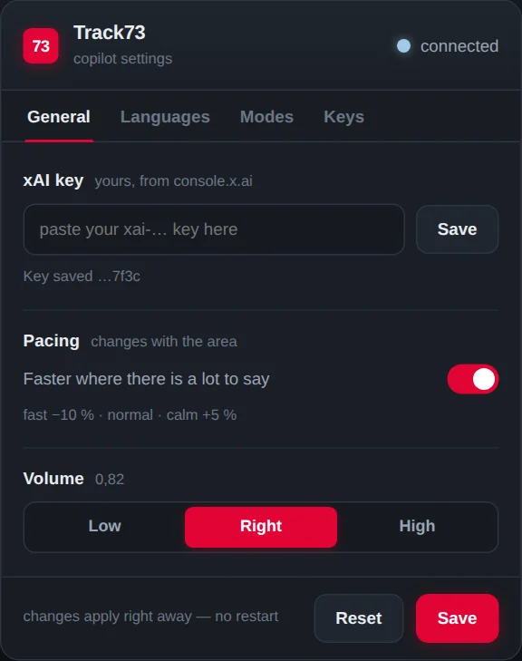
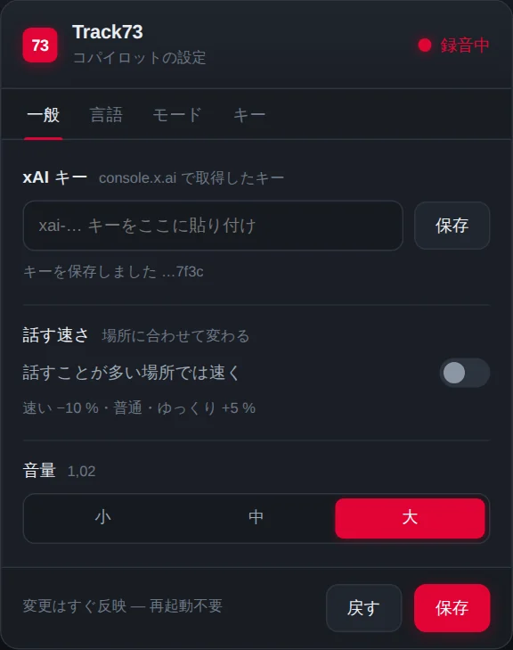
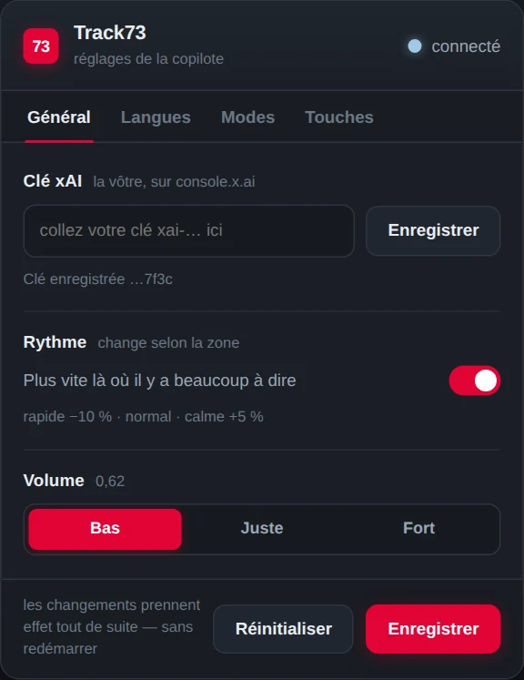
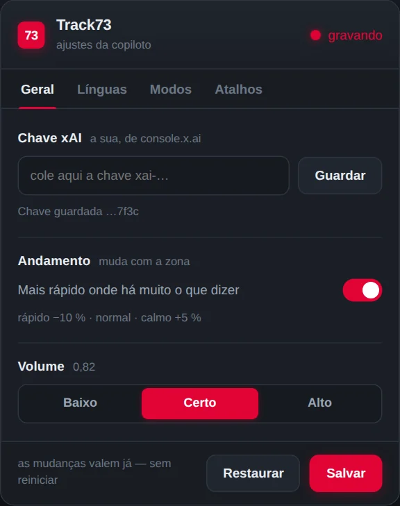
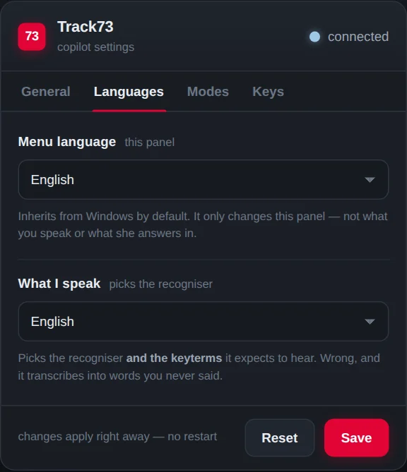
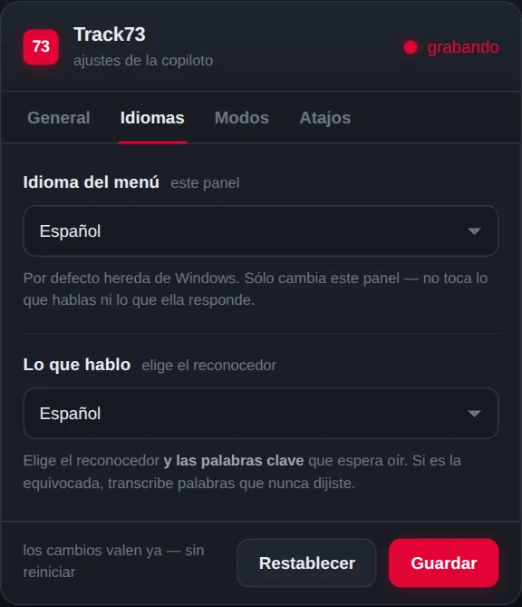
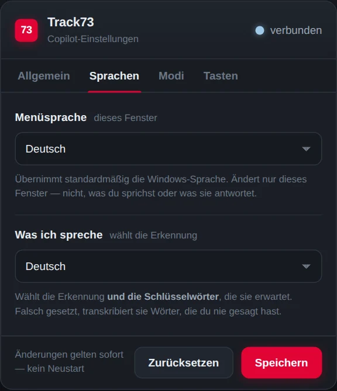
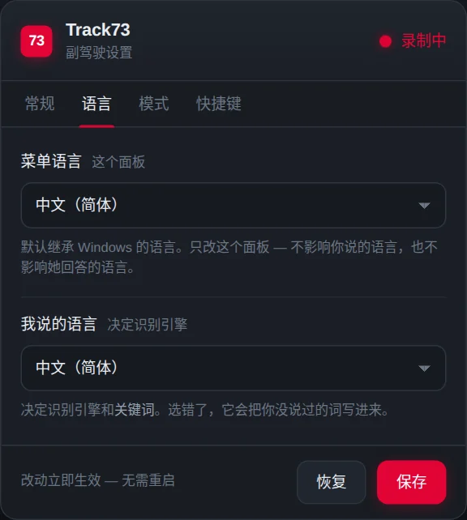
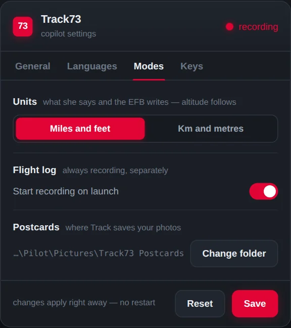
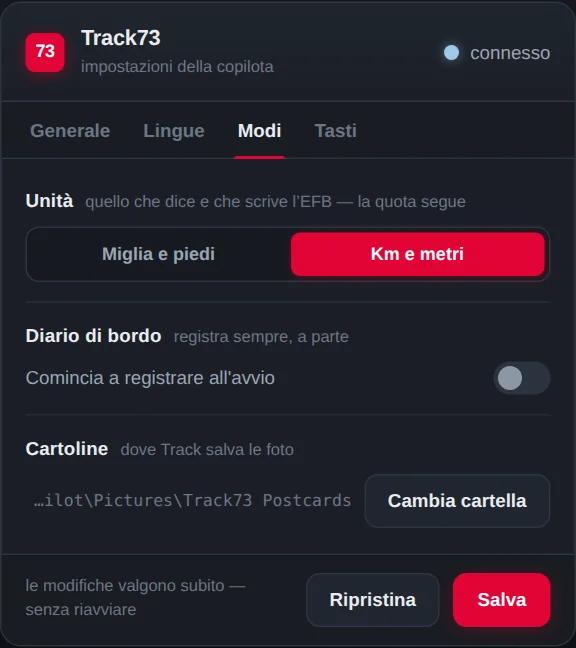
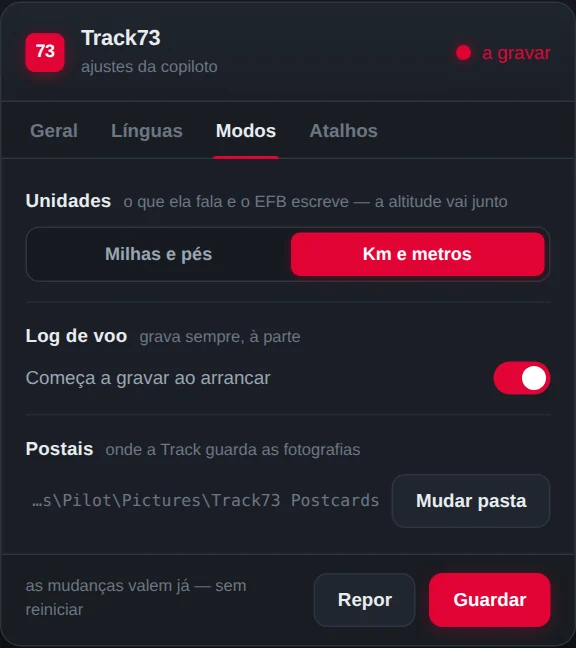
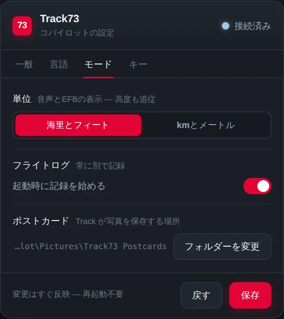
The settings panel · 9 languages
Flight 85 · SBFN19 SEP 2026 · UTC
16:44:30 · HDG 270° · 783 FT AGL
How long would it take from here to the mainland, to Brazil?«Quanto tempo será que dá pra, daqui até o continente, Brasil?»
From here to the Brazilian mainland it's about 350 km in a straight line. At your current 227 knots, that's roughly 50 minutes of flying.
16:45:20 · HDG 089° · 702 FT AGL
And this beach down here?«E essa praia aqui embaixo?»
That's Praia do Leão, one of the wildest beaches on Noronha: pale sand, strong surf, and sea turtles that come ashore at night to lay their eggs.
16:46:55 · HDG 095° · 1,090 FT AGL
And that rock up ahead, what is it? What's it called?«E aquela pedra ali à frente, que que é? Qual é o nome dela?»
That's Morro do Pico, the highest point on Fernando de Noronha at 323 metres and the island's best-known landmark. From here you can see its shape, like a finger pointing at the sky.